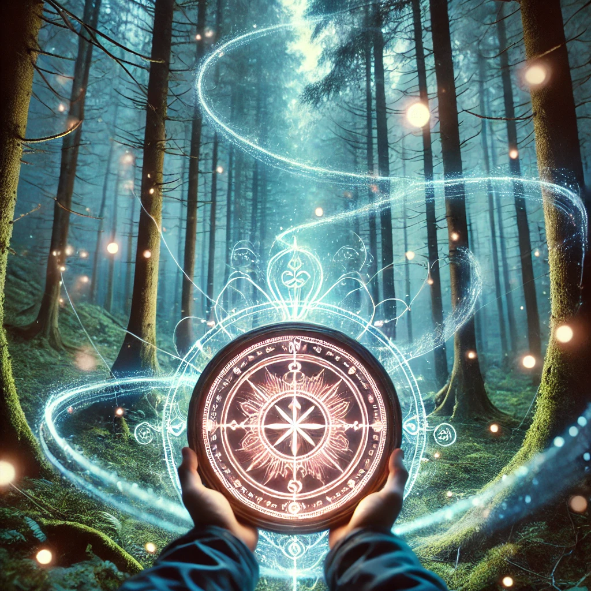

As you focus on the compass, you feel its energy radiate outward. The glyphs glow steadily, pulsating with a rhythm that resonates with your heartbeat. The energy feels both foreign and familiar, as if it exists in harmony with the life force around you.
Closing your eyes, you tune in to the flow of this energy. It swirls around you, connecting to the forest, the sky, and the unseen realms beyond. You realize that the compass is not merely a tool but a conduit—a bridge to a greater current of power.
“Energy is neither good nor bad—it simply is,” whispers a voice from within. “To understand it is to wield it. To wield it is to shape your reality.”
The compass hums softly, waiting for you to decide how you will channel this energy.

How will you proceed?